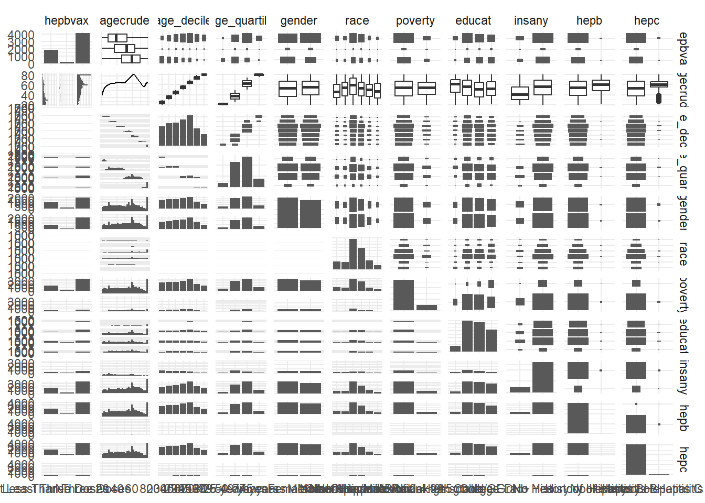

summary(nhanes)## agecrude age_decile age_quartile gender
## Min. :20.00 60-69 :1258 <25 years : 393 Female:3288
## 1st Qu.:38.00 50-59 :1094 25-49 years:2334 Male :3010
## Median :54.00 40-49 : 969 50-74 years:2813
## Mean :52.25 30-39 : 940 ≥75 years : 758
## 3rd Qu.:66.00 20-29 : 818
## Max. :80.00 70-79 : 725
## (Other): 494
## race poverty educat
## Mexican American : 616 Index of 0-4.99:5404 <9th grade : 404
## Other Hispanic : 550 Index >=5 : 894 High school/GED:2209
## Non-Hispanic White:2424 College :2095
## Non-Hispanic Black:1710 College Grad+ :1590
## Non-Hispanic Asian: 699
## Other/Multi-Racial: 299
##
## insany hepb hepc
## No : 900 No History of Hepatitis B:6226 No History of Hepatitis C:6174
## Yes:5398 History of Hepatitis B : 72 History of Hepatitis C : 124
##
##
##
##
##
## hepbvax
## At Least Three Doses :1911
## Less Than Three Doses: 260
## No Doses :4127
##
##
##
## pair_plots = nhanes %>%
relocate(hepbvax) %>%
ggpairs()
pair_plots## `stat_bin()` using `bins = 30`. Pick better
## value with `binwidth`.
## `stat_bin()` using `bins = 30`. Pick better
## value with `binwidth`.
## `stat_bin()` using `bins = 30`. Pick better
## value with `binwidth`.
## `stat_bin()` using `bins = 30`. Pick better
## value with `binwidth`.
## `stat_bin()` using `bins = 30`. Pick better
## value with `binwidth`.
## `stat_bin()` using `bins = 30`. Pick better
## value with `binwidth`.
## `stat_bin()` using `bins = 30`. Pick better
## value with `binwidth`.
## `stat_bin()` using `bins = 30`. Pick better
## value with `binwidth`.
## `stat_bin()` using `bins = 30`. Pick better
## value with `binwidth`.
## `stat_bin()` using `bins = 30`. Pick better
## value with `binwidth`. According to the plots, we may found most of the variable distributions are normal, it would not be necessary to make some transformation.
As we have three age variables in the data set and for each analysis, we may need only one of them. Thus we may separate the data set into dataset with age_decile, age_quartile and age_crude.
nhanes_decile = nhanes %>%
select( - age_quartile, - agecrude)
nhanes_quartile = nhanes %>%
select( - age_decile, - agecrude)
nhanes_crude = nhanes %>%
select( - age_decile, - age_quartile)Here, let’s build two logistic regression model based on nhanes data set with different age_variables.
fit1 = glm(hepbvax ~ ., data = nhanes_decile, family = binomial())
summary(fit1)##
## Call:
## glm(formula = hepbvax ~ ., family = binomial(), data = nhanes_decile)
##
## Deviance Residuals:
## Min 1Q Median 3Q Max
## -2.7533 -0.8049 0.4724 0.7591 2.0611
##
## Coefficients:
## Estimate Std. Error z value Pr(>|z|)
## (Intercept) 0.39298 0.20880 1.882 0.059825 .
## age_decile30-39 0.93727 0.10558 8.878 < 2e-16 ***
## age_decile40-49 1.68453 0.10833 15.550 < 2e-16 ***
## age_decile50-59 2.25859 0.11201 20.164 < 2e-16 ***
## age_decile60-69 2.55615 0.11425 22.373 < 2e-16 ***
## age_decile70-79 3.05573 0.14613 20.911 < 2e-16 ***
## age_decile80+ 3.86756 0.22177 17.439 < 2e-16 ***
## genderMale 0.54083 0.06368 8.493 < 2e-16 ***
## raceOther Hispanic -0.44413 0.14841 -2.993 0.002766 **
## raceNon-Hispanic White -0.32159 0.12038 -2.671 0.007552 **
## raceNon-Hispanic Black -0.11850 0.12254 -0.967 0.333524
## raceNon-Hispanic Asian -0.52172 0.14097 -3.701 0.000215 ***
## raceOther/Multi-Racial -0.30932 0.17447 -1.773 0.076235 .
## povertyIndex >=5 -0.13252 0.09197 -1.441 0.149605
## educatHigh school/GED -0.41600 0.18029 -2.307 0.021034 *
## educatCollege -1.08172 0.17931 -6.033 1.61e-09 ***
## educatCollege Grad+ -1.24229 0.18391 -6.755 1.43e-11 ***
## insanyYes -0.49316 0.09334 -5.283 1.27e-07 ***
## hepbHistory of Hepatitis B -0.11781 0.29478 -0.400 0.689417
## hepcHistory of Hepatitis C -0.31016 0.23671 -1.310 0.190105
## ---
## Signif. codes: 0 '***' 0.001 '**' 0.01 '*' 0.05 '.' 0.1 ' ' 1
##
## (Dispersion parameter for binomial family taken to be 1)
##
## Null deviance: 7730.7 on 6297 degrees of freedom
## Residual deviance: 6210.1 on 6278 degrees of freedom
## AIC: 6250.1
##
## Number of Fisher Scoring iterations: 5fit2 = glm(hepbvax ~ ., data = nhanes_quartile, family = binomial())
summary(fit2)##
## Call:
## glm(formula = hepbvax ~ ., family = binomial(), data = nhanes_quartile)
##
## Deviance Residuals:
## Min 1Q Median 3Q Max
## -2.6867 -0.9309 0.4872 0.7890 2.0756
##
## Coefficients:
## Estimate Std. Error z value Pr(>|z|)
## (Intercept) 0.15915 0.22422 0.710 0.47782
## age_quartile25-49 years 1.26053 0.12505 10.080 < 2e-16 ***
## age_quartile50-74 years 2.61594 0.12914 20.257 < 2e-16 ***
## age_quartile≥75 years 3.77683 0.19238 19.633 < 2e-16 ***
## genderMale 0.55765 0.06256 8.913 < 2e-16 ***
## raceOther Hispanic -0.38615 0.14602 -2.645 0.00818 **
## raceNon-Hispanic White -0.25047 0.11806 -2.122 0.03387 *
## raceNon-Hispanic Black -0.09437 0.12029 -0.784 0.43276
## raceNon-Hispanic Asian -0.50983 0.13839 -3.684 0.00023 ***
## raceOther/Multi-Racial -0.28614 0.17043 -1.679 0.09316 .
## povertyIndex >=5 -0.10093 0.09088 -1.110 0.26679
## educatHigh school/GED -0.52099 0.17845 -2.920 0.00351 **
## educatCollege -1.16901 0.17773 -6.577 4.79e-11 ***
## educatCollege Grad+ -1.32578 0.18230 -7.272 3.53e-13 ***
## insanyYes -0.35418 0.09069 -3.905 9.41e-05 ***
## hepbHistory of Hepatitis B 0.02221 0.29644 0.075 0.94026
## hepcHistory of Hepatitis C -0.25937 0.23406 -1.108 0.26780
## ---
## Signif. codes: 0 '***' 0.001 '**' 0.01 '*' 0.05 '.' 0.1 ' ' 1
##
## (Dispersion parameter for binomial family taken to be 1)
##
## Null deviance: 7730.7 on 6297 degrees of freedom
## Residual deviance: 6379.2 on 6281 degrees of freedom
## AIC: 6413.2
##
## Number of Fisher Scoring iterations: 5fit3 = glm(hepbvax ~ ., data = nhanes_crude, family = binomial())
summary(fit3)##
## Call:
## glm(formula = hepbvax ~ ., family = binomial(), data = nhanes_crude)
##
## Deviance Residuals:
## Min 1Q Median 3Q Max
## -2.7084 -0.8430 0.4533 0.7678 1.9438
##
## Coefficients:
## Estimate Std. Error z value Pr(>|z|)
## (Intercept) -0.938004 0.213178 -4.400 1.08e-05 ***
## agecrude 0.063338 0.002097 30.198 < 2e-16 ***
## genderMale 0.543245 0.063558 8.547 < 2e-16 ***
## raceOther Hispanic -0.437334 0.147478 -2.965 0.003023 **
## raceNon-Hispanic White -0.340403 0.119122 -2.858 0.004269 **
## raceNon-Hispanic Black -0.122445 0.121365 -1.009 0.313024
## raceNon-Hispanic Asian -0.489023 0.139734 -3.500 0.000466 ***
## raceOther/Multi-Racial -0.294390 0.172910 -1.703 0.088650 .
## povertyIndex >=5 -0.104682 0.092304 -1.134 0.256752
## educatHigh school/GED -0.430501 0.179782 -2.395 0.016640 *
## educatCollege -1.077829 0.179058 -6.019 1.75e-09 ***
## educatCollege Grad+ -1.245563 0.183914 -6.773 1.27e-11 ***
## insanyYes -0.487101 0.091650 -5.315 1.07e-07 ***
## hepbHistory of Hepatitis B -0.135657 0.299006 -0.454 0.650050
## hepcHistory of Hepatitis C -0.337341 0.236944 -1.424 0.154529
## ---
## Signif. codes: 0 '***' 0.001 '**' 0.01 '*' 0.05 '.' 0.1 ' ' 1
##
## (Dispersion parameter for binomial family taken to be 1)
##
## Null deviance: 7730.7 on 6297 degrees of freedom
## Residual deviance: 6204.2 on 6283 degrees of freedom
## AIC: 6234.2
##
## Number of Fisher Scoring iterations: 5Here we would like to do automatic selection to choose the best subsets for our models. #### Model with age_decile Backward Selection
step(fit1, direction = "backward")## Start: AIC=6250.1
## hepbvax ~ age_decile + gender + race + poverty + educat + insany +
## hepb + hepc
##
## Df Deviance AIC
## - hepb 1 6210.3 6248.3
## - hepc 1 6211.7 6249.7
## <none> 6210.1 6250.1
## - poverty 1 6212.2 6250.2
## - race 5 6233.9 6263.9
## - insany 1 6239.0 6277.0
## - gender 1 6283.3 6321.3
## - educat 3 6346.3 6380.3
## - age_decile 6 7333.1 7361.1
##
## Step: AIC=6248.26
## hepbvax ~ age_decile + gender + race + poverty + educat + insany +
## hepc
##
## Df Deviance AIC
## - hepc 1 6212.0 6248.0
## <none> 6210.3 6248.3
## - poverty 1 6212.3 6248.3
## - race 5 6234.3 6262.3
## - insany 1 6239.1 6275.1
## - gender 1 6283.3 6319.3
## - educat 3 6346.4 6378.4
## - age_decile 6 7333.4 7359.4
##
## Step: AIC=6247.96
## hepbvax ~ age_decile + gender + race + poverty + educat + insany
##
## Df Deviance AIC
## - poverty 1 6213.9 6247.9
## <none> 6212.0 6248.0
## - race 5 6235.8 6261.8
## - insany 1 6240.7 6274.7
## - gender 1 6284.2 6318.2
## - educat 3 6347.1 6377.1
## - age_decile 6 7334.3 7358.3
##
## Step: AIC=6247.94
## hepbvax ~ age_decile + gender + race + educat + insany
##
## Df Deviance AIC
## <none> 6213.9 6247.9
## - race 5 6239.0 6263.0
## - insany 1 6244.1 6276.1
## - gender 1 6285.2 6317.2
## - educat 3 6365.0 6393.0
## - age_decile 6 7334.3 7356.3##
## Call: glm(formula = hepbvax ~ age_decile + gender + race + educat +
## insany, family = binomial(), data = nhanes_decile)
##
## Coefficients:
## (Intercept) age_decile30-39 age_decile40-49
## 0.4078 0.9299 1.6728
## age_decile50-59 age_decile60-69 age_decile70-79
## 2.2364 2.5332 3.0449
## age_decile80+ genderMale raceOther Hispanic
## 3.8650 0.5324 -0.4387
## raceNon-Hispanic White raceNon-Hispanic Black raceNon-Hispanic Asian
## -0.3274 -0.1124 -0.5297
## raceOther/Multi-Racial educatHigh school/GED educatCollege
## -0.3061 -0.4248 -1.0941
## educatCollege Grad+ insanyYes
## -1.2790 -0.5024
##
## Degrees of Freedom: 6297 Total (i.e. Null); 6281 Residual
## Null Deviance: 7731
## Residual Deviance: 6214 AIC: 6248The model we obtained is glm(formula = hepbvax ~ age_decile + gender + race + educat + insany, family = binomial(), data = nhanes_decile)
Forward Selection
step(fit1, direction = "forward")## Start: AIC=6250.1
## hepbvax ~ age_decile + gender + race + poverty + educat + insany +
## hepb + hepc##
## Call: glm(formula = hepbvax ~ age_decile + gender + race + poverty +
## educat + insany + hepb + hepc, family = binomial(), data = nhanes_decile)
##
## Coefficients:
## (Intercept) age_decile30-39
## 0.3930 0.9373
## age_decile40-49 age_decile50-59
## 1.6845 2.2586
## age_decile60-69 age_decile70-79
## 2.5562 3.0557
## age_decile80+ genderMale
## 3.8676 0.5408
## raceOther Hispanic raceNon-Hispanic White
## -0.4441 -0.3216
## raceNon-Hispanic Black raceNon-Hispanic Asian
## -0.1185 -0.5217
## raceOther/Multi-Racial povertyIndex >=5
## -0.3093 -0.1325
## educatHigh school/GED educatCollege
## -0.4160 -1.0817
## educatCollege Grad+ insanyYes
## -1.2423 -0.4932
## hepbHistory of Hepatitis B hepcHistory of Hepatitis C
## -0.1178 -0.3102
##
## Degrees of Freedom: 6297 Total (i.e. Null); 6278 Residual
## Null Deviance: 7731
## Residual Deviance: 6210 AIC: 6250The model we obtained is glm(formula = hepbvax ~ age_decile + gender + race + poverty + educat + insany + hepb + hepc, family = binomial(), data = nhanes_decile)
Backward Selection
step(fit2, direction = "backward")## Start: AIC=6413.24
## hepbvax ~ age_quartile + gender + race + poverty + educat + insany +
## hepb + hepc
##
## Df Deviance AIC
## - hepb 1 6379.2 6411.2
## - hepc 1 6380.4 6412.4
## - poverty 1 6380.5 6412.5
## <none> 6379.2 6413.2
## - race 5 6401.4 6425.4
## - insany 1 6394.8 6426.8
## - gender 1 6459.9 6491.9
## - educat 3 6521.0 6549.0
## - age_quartile 3 7333.1 7361.1
##
## Step: AIC=6411.25
## hepbvax ~ age_quartile + gender + race + poverty + educat + insany +
## hepc
##
## Df Deviance AIC
## - hepc 1 6380.4 6410.4
## - poverty 1 6380.5 6410.5
## <none> 6379.2 6411.2
## - race 5 6401.5 6423.5
## - insany 1 6394.8 6424.8
## - gender 1 6460.0 6490.0
## - educat 3 6521.0 6547.0
## - age_quartile 3 7333.4 7359.4
##
## Step: AIC=6410.42
## hepbvax ~ age_quartile + gender + race + poverty + educat + insany
##
## Df Deviance AIC
## - poverty 1 6381.6 6409.6
## <none> 6380.4 6410.4
## - race 5 6402.4 6422.4
## - insany 1 6396.0 6424.0
## - gender 1 6460.5 6488.5
## - educat 3 6521.4 6545.4
## - age_quartile 3 7334.3 7358.3
##
## Step: AIC=6409.6
## hepbvax ~ age_quartile + gender + race + educat + insany
##
## Df Deviance AIC
## <none> 6381.6 6409.6
## - race 5 6404.6 6422.6
## - insany 1 6398.0 6424.0
## - gender 1 6461.0 6487.0
## - educat 3 6537.0 6559.0
## - age_quartile 3 7334.3 7356.3##
## Call: glm(formula = hepbvax ~ age_quartile + gender + race + educat +
## insany, family = binomial(), data = nhanes_quartile)
##
## Coefficients:
## (Intercept) age_quartile25-49 years age_quartile50-74 years
## 0.17054 1.25539 2.60137
## age_quartile≥75 years genderMale raceOther Hispanic
## 3.77381 0.55177 -0.38263
## raceNon-Hispanic White raceNon-Hispanic Black raceNon-Hispanic Asian
## -0.25442 -0.08995 -0.51384
## raceOther/Multi-Racial educatHigh school/GED educatCollege
## -0.28324 -0.52828 -1.17913
## educatCollege Grad+ insanyYes
## -1.35420 -0.36130
##
## Degrees of Freedom: 6297 Total (i.e. Null); 6284 Residual
## Null Deviance: 7731
## Residual Deviance: 6382 AIC: 6410The model we obtained is glm(formula = hepbvax ~ age_quartile + gender + race + educat + insany, family = binomial(), data = nhanes_quartile)
Forward Selection
step(fit2, direction = "forward")## Start: AIC=6413.24
## hepbvax ~ age_quartile + gender + race + poverty + educat + insany +
## hepb + hepc##
## Call: glm(formula = hepbvax ~ age_quartile + gender + race + poverty +
## educat + insany + hepb + hepc, family = binomial(), data = nhanes_quartile)
##
## Coefficients:
## (Intercept) age_quartile25-49 years
## 0.15915 1.26053
## age_quartile50-74 years age_quartile≥75 years
## 2.61594 3.77683
## genderMale raceOther Hispanic
## 0.55765 -0.38615
## raceNon-Hispanic White raceNon-Hispanic Black
## -0.25047 -0.09437
## raceNon-Hispanic Asian raceOther/Multi-Racial
## -0.50983 -0.28614
## povertyIndex >=5 educatHigh school/GED
## -0.10093 -0.52099
## educatCollege educatCollege Grad+
## -1.16901 -1.32578
## insanyYes hepbHistory of Hepatitis B
## -0.35418 0.02221
## hepcHistory of Hepatitis C
## -0.25937
##
## Degrees of Freedom: 6297 Total (i.e. Null); 6281 Residual
## Null Deviance: 7731
## Residual Deviance: 6379 AIC: 6413The model we obtained is glm(formula = hepbvax ~ age_quartile + gender + race + poverty + educat + insany + hepb + hepc, family = binomial(), data = nhanes_quartile)
Backward Selection
step(fit3, direction = "backward")## Start: AIC=6234.2
## hepbvax ~ agecrude + gender + race + poverty + educat + insany +
## hepb + hepc
##
## Df Deviance AIC
## - hepb 1 6204.4 6232.4
## - poverty 1 6205.5 6233.5
## - hepc 1 6206.1 6234.1
## <none> 6204.2 6234.2
## - race 5 6226.7 6246.7
## - insany 1 6233.3 6261.3
## - gender 1 6278.3 6306.3
## - educat 3 6337.4 6361.4
## - agecrude 1 7333.1 7361.1
##
## Step: AIC=6232.4
## hepbvax ~ agecrude + gender + race + poverty + educat + insany +
## hepc
##
## Df Deviance AIC
## - poverty 1 6205.7 6231.7
## <none> 6204.4 6232.4
## - hepc 1 6206.4 6232.4
## - race 5 6227.1 6245.1
## - insany 1 6233.5 6259.5
## - gender 1 6278.3 6304.3
## - educat 3 6337.6 6359.6
## - agecrude 1 7333.4 7359.4
##
## Step: AIC=6231.68
## hepbvax ~ agecrude + gender + race + educat + insany + hepc
##
## Df Deviance AIC
## - hepc 1 6207.6 6231.6
## <none> 6205.7 6231.7
## - race 5 6229.4 6245.4
## - insany 1 6236.0 6260.0
## - gender 1 6278.9 6302.9
## - educat 3 6353.3 6373.3
## - agecrude 1 7333.5 7357.5
##
## Step: AIC=6231.63
## hepbvax ~ agecrude + gender + race + educat + insany
##
## Df Deviance AIC
## <none> 6207.6 6231.6
## - race 5 6231.1 6245.1
## - insany 1 6237.8 6259.8
## - gender 1 6279.9 6301.9
## - educat 3 6353.9 6371.9
## - agecrude 1 7334.3 7356.3##
## Call: glm(formula = hepbvax ~ agecrude + gender + race + educat + insany,
## family = binomial(), data = nhanes_crude)
##
## Coefficients:
## (Intercept) agecrude genderMale
## -0.92128 0.06297 0.53543
## raceOther Hispanic raceNon-Hispanic White raceNon-Hispanic Black
## -0.43324 -0.34469 -0.11847
## raceNon-Hispanic Asian raceOther/Multi-Racial educatHigh school/GED
## -0.49636 -0.29225 -0.43683
## educatCollege educatCollege Grad+ insanyYes
## -1.08667 -1.27232 -0.49408
##
## Degrees of Freedom: 6297 Total (i.e. Null); 6286 Residual
## Null Deviance: 7731
## Residual Deviance: 6208 AIC: 6232The model we obtained is glm(formula = hepbvax ~ agecrude + gender + race + educat + insany, family = binomial(), data = nhanes_crude)
Forward Selection
step(fit3, direction = "forward")## Start: AIC=6234.2
## hepbvax ~ agecrude + gender + race + poverty + educat + insany +
## hepb + hepc##
## Call: glm(formula = hepbvax ~ agecrude + gender + race + poverty +
## educat + insany + hepb + hepc, family = binomial(), data = nhanes_crude)
##
## Coefficients:
## (Intercept) agecrude
## -0.93800 0.06334
## genderMale raceOther Hispanic
## 0.54324 -0.43733
## raceNon-Hispanic White raceNon-Hispanic Black
## -0.34040 -0.12244
## raceNon-Hispanic Asian raceOther/Multi-Racial
## -0.48902 -0.29439
## povertyIndex >=5 educatHigh school/GED
## -0.10468 -0.43050
## educatCollege educatCollege Grad+
## -1.07783 -1.24556
## insanyYes hepbHistory of Hepatitis B
## -0.48710 -0.13566
## hepcHistory of Hepatitis C
## -0.33734
##
## Degrees of Freedom: 6297 Total (i.e. Null); 6283 Residual
## Null Deviance: 7731
## Residual Deviance: 6204 AIC: 6234The model we obtained is glm(formula = hepbvax ~ agecrude + gender + race + poverty + educat + insany + hepb + hepc, family = binomial(), data = nhanes_crude)
Comparing the AIC of the model with different variables, we can find that the models with agecrude has a smaller AIC. Thus we will choose age_crude as our age variable in the model.
The model obtained from Backward elimination and forward selection were different. The Forward model three extra predictors included than that of backward: poverty, hepb and hepc. To choose a better model, further step may be required.
Let’s fit the models from backward elimination and forward selection.
fit_small = glm(formula = hepbvax ~ agecrude + gender + race + educat + insany, family = binomial(), data = nhanes_crude)
fit_large = glm(formula = hepbvax ~ agecrude + gender + race + poverty + educat + insany + hepb + hepc, family = binomial(), data = nhanes_crude)Anova would be used to make selection between the small model and the large model.
anova(fit_small, fit_large, test = "LR")## Analysis of Deviance Table
##
## Model 1: hepbvax ~ agecrude + gender + race + educat + insany
## Model 2: hepbvax ~ agecrude + gender + race + poverty + educat + insany +
## hepb + hepc
## Resid. Df Resid. Dev Df Deviance Pr(>Chi)
## 1 6286 6207.6
## 2 6283 6204.2 3 3.4305 0.3299As the p value is 0.3299, larger than 0.05. Thus we can conclude that the larger model is not superior. The model we would use would be the smaller model with agecrude variable. The model: fit_small = glm(formula = hepbvax ~ agecrude + gender + race + educat + insany, family = binomial(), data = nhanes_crude)
model = fit_small
model %>%
broom::glance()## # A tibble: 1 × 8
## null.deviance df.null logLik AIC BIC deviance df.residual nobs
## <dbl> <int> <dbl> <dbl> <dbl> <dbl> <int> <int>
## 1 7731. 6297 -3104. 6232. 6313. 6208. 6286 6298model %>%
broom::tidy() %>%
knitr::kable(digits = 3)| term | estimate | std.error | statistic | p.value |
|---|---|---|---|---|
| (Intercept) | -0.921 | 0.213 | -4.328 | 0.000 |
| agecrude | 0.063 | 0.002 | 30.244 | 0.000 |
| genderMale | 0.535 | 0.063 | 8.447 | 0.000 |
| raceOther Hispanic | -0.433 | 0.147 | -2.939 | 0.003 |
| raceNon-Hispanic White | -0.345 | 0.119 | -2.895 | 0.004 |
| raceNon-Hispanic Black | -0.118 | 0.121 | -0.978 | 0.328 |
| raceNon-Hispanic Asian | -0.496 | 0.139 | -3.560 | 0.000 |
| raceOther/Multi-Racial | -0.292 | 0.173 | -1.691 | 0.091 |
| educatHigh school/GED | -0.437 | 0.180 | -2.431 | 0.015 |
| educatCollege | -1.087 | 0.179 | -6.077 | 0.000 |
| educatCollege Grad+ | -1.272 | 0.182 | -7.008 | 0.000 |
| insanyYes | -0.494 | 0.091 | -5.409 | 0.000 |